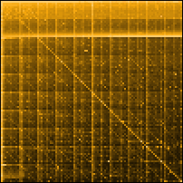

 
Visualization
Statement
|
The authors conducted an exhaustive empirical study, with the aid of
custom software, public search engines and powerful statistical techniques,
in order to determine the relative popularity of every integer between
0 and 100,000. The resulting information exhibits an extraordinary
variety of patterns which reflect and refract our culture, our minds,
and our bodies.
For example, certain numbers, such as 212, 486, 911, 1040, 1492, 1776,
68040, or 90210, occur more frequently than their neighbors because
they are used to denominate the phone numbers, tax forms, computer chips,
famous dates, or television programs that figure prominently in our
culture. Regular periodicities in the data, located at multiples and
powers of ten, mirror our cognitive preference for round numbers in
our biologically-driven base-10 numbering system. Certain numbers, such
as 12345, appear to be more popular simply because they are
easier to remember.
Humanity’s fascination with numbers is ancient and complex. Our present
relationship with numbers reveals both a highly developed tool and a
highly developed user, working together to measure, create, and predict
both ourselves and the world around us. But like every symbiotic couple,
the tool we would like to believe is separate from us (and thus objective)
is actually an intricate reflection of our thoughts, interests, and
capabilities. One intriguing result of this symbiosis is that the numeric
system we use to describe patterns, is actually used in a patterned
fashion to describe.
We surmise that our dataset is a numeric snaphot of the collective consciousness.
Herein we return our analyses to the public in the form of an interactive
visualization, whose aim is to provoke awareness of one's own numeric
manifestations.
|